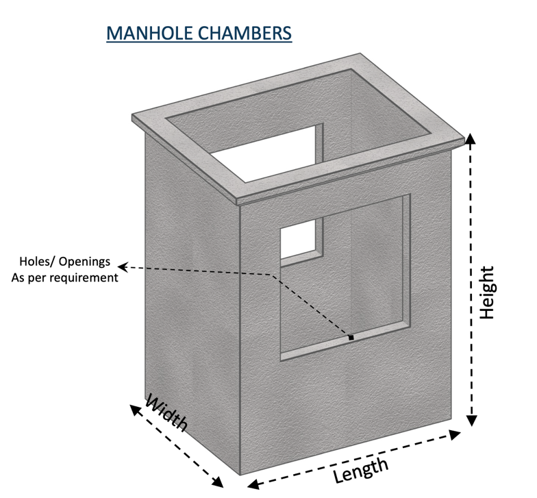
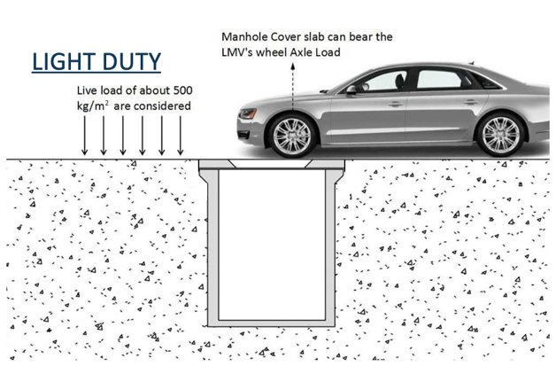
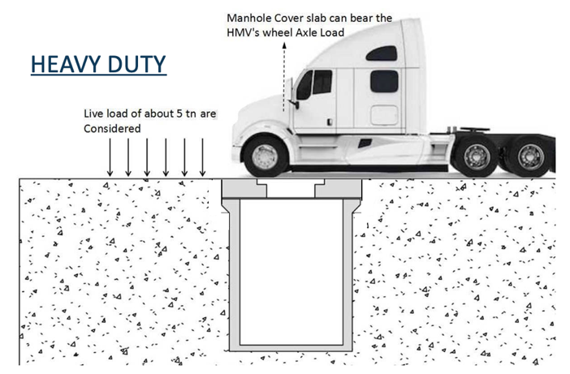
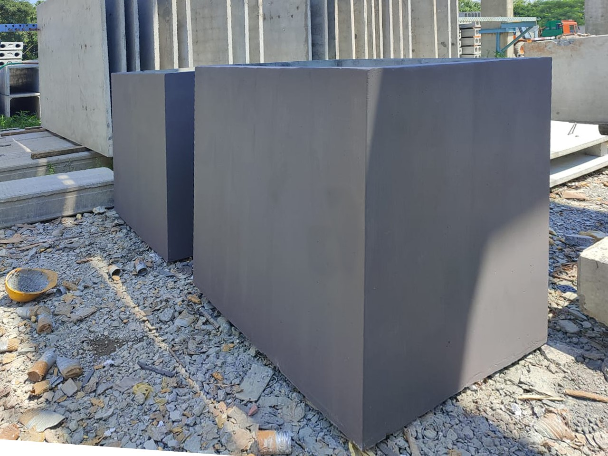
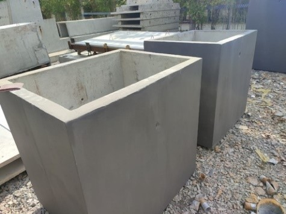
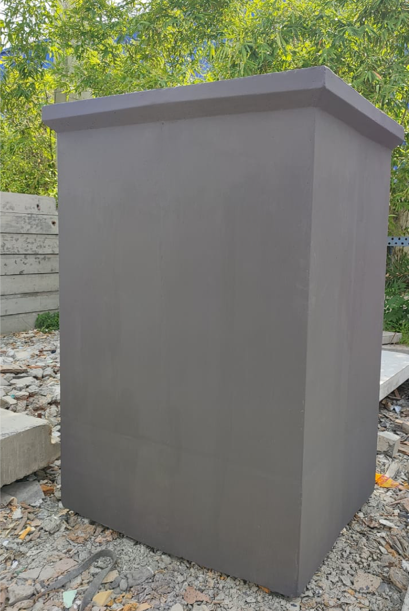

VME’s MANHOLE CHAMBERS / UTILITY CHAMBERS
VME’s Precast Manhole Chambers are cast on monolithic moulds, thus making it water tight. Sizes available are 600 x 600mm to 1500 x 1500mm & Covers for the manhole will also be suppled based on the load coming on the manhole.
PURPOSE OF PRECAST MANHOLE CHAMBER
To carry out inspection, cleaning, and removing the obstruction in the sewer / water lines
To allow joining of sewer / water pipes or changing the direction of alignment or both
To allow the escape of gases through perforated cover and thus helps ventilation for sewer lines.

Construction of Chambers below ground level in conventional method is a very tedious activity, as the size of the chambers are very narrow and very less space available to work. More over sealing the construction joints against water leaks will also be a challenging one.
MATERIAL SPECIFICATION
Concrete : Grade 40 to Grade 45
Steel : Fe500
Nominal cover : 25mm
PURPOSE OF PRECAST MANHOLE CHAMBER
Density of backfill soil should be minimum18 Kn/m3
Backfill material adjacent to side wall should be of granular type
Backfilling and compaction to be performed layer by layer alternatively on either side of the drain until the top of the drain.
PURPOSE OF PRECAST MANHOLE CHAMBER
BS 5400 : Part 4 : 1990 | BD 31/01 | MS 1293 : Part 1 : 1992
IRC 6 – 2000 Cl 214.1.1.3 | IS 456 : 2000 | IS 12592: 2002


All of these problems can be eliminated in precast system, where the chamber is monolithically cast until 2m from the bottom most point. Chambers having a depth of more than 2m will have only one joint and the joints will be in multiple heights of 2m. For a depth of 3m, the joint will be made in the factory and then transported. The joints will be well treated and then sealed with Polyurethane sealant.
ADVANTAGES OF PRECAST MANHOLE CHAMBER COMPARED TO TRADITIONAL IN-SITU MANHOLES
Robust Design
Consistent with high quality materials and good finishing
Long service life
Maintenance free
Safer, quicker and cheaper to install
Watertight
Create less waste on site and has a lower carbon foot print
Very minimum site works
Required openings provided in the chamber walls for connecting the service lines.
Versatile and can accommodate all standard pipe materials and sizes
Existing precast manholes can even be retrofitted with new connections for future developments without the need to replace the entire manholes
Savings on cost and construction / installation time.
REALTIME IMAGES


